양복기능사 (2004-07-18 기출문제)
1과목: 임의 구분
1. 목둘레 주변에 주름이 생기는 가장 큰 원인은?
- 어깨가 처진 사람
- 어깨가 올라간 사람
- 목 둘레가 굵은 사람
- 깃고대 치수가 적은 사람
(정답률: 53%)

2. 다음 중 봉제공정 순서를 바르게 나타낸 것은?
- 생산설계-재단준비-재단-봉제
- 생산설계-재단-재단준비-봉제
- 재단준비-재단-봉제-생산설계
- 재단준비-재단-생산설계-봉제
(정답률: 100%)
3. 코트의 시접 중 가장 많아야 할 부분은?
- 등솔기
- 옆솔기
- 어깨솔기
- 소매솔기
(정답률: 65%)
4. 다음중 다림질 온도(℃) 표시로 적당한 것은?
- 면.마 180-220
- 아세테이트 160-180
- 견 150-160
- 레이온 150-160
(정답률: 89%)
5. 밑실 장력을 조절하는 경우 면사의 장력으로 맞는 것은?
- 5 ~ 20 g
- 20 ~ 30 g
- 50 ~ 6 g
- 80 ~ 90 g
(정답률: 82%)
6. 좋은 옷이란 체형을 파악하고 체형에 어울리는 보기 좋은 선을 만들어 내는데 있다. 굽은 다리의 해결책으로 틀린 것은?
- 굽은 다리가 그대로 보이게 한다.
- 휘어짐을 몰라보게 한다.
- 패턴의 무릎 부분을 절개하여 안으로 주름선을 이동한다.
- 장딴지를 살려서 처리한다.
(정답률: 100%)
7. 소매가봉에서 틀린 것은?
- 소매의 자리잡음은 윗소매의 안쪽을 다리미로 틀어준다.
- 소매 뒤솔기를 시칠때는 윗소매 앞솔기 안쪽에서 3.5cm 얹어 시친다.
- 소매부리는 겉으로 접어 시쳐도 무방하다.
- 소매솔기를 시칠때는 마침표를 정확히 맞쳐야 한다.
(정답률: 65%)
8. 다음 중 증기를 쐬어 옷감 올을 바로 잡아야 하는 것은?
- 견직물
- 그레이프
- 조우젯
- 벨벳
(정답률: 80%)
9. 양복제도에 관한 사항과 거리가 먼 것은?
- 선의 굵기에 따라서는 실선 파선 쇄선 등이 쓰인다.
- 가는 실선으로 표시하는 선은 치수선 지시선 치수보조선 등이 있다.
- 도면이란 평면상에 점과 선을 써서 물체의 모양 위치크기를 나타내고 여기에 기호 부호 문자 등을 나타낸 것이다.
- 제도에서 모양을 표시하는 실선은 굵기에 제한받지 아니하며 사용자가 편한대로 할 수 있다.
(정답률: 88%)
10. 프린세스 라인(princess line)의 설명으로 가장 적당한 것은?
- 어깨에서 B.P를 통과하는 선이다.
- 암홀에서 B.P를 통과하는 선이다.
- 허리선을 낮추어서 옆으로 자른 선이다.
- 허리선을 높혀서 옆으로 자른 선이다.
(정답률: 82%)
11. 베스트(Vest)의 시침 바느질을 해서 입어보니 그림과 같이 앞가슴에 군주름이 생겼다. 보정 방법으로 가장 좋은 것은?
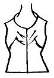
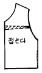
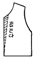
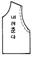
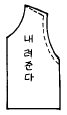
(정답률: 80%)
12. 다음 중 굴신도를 측정할 때 알맞은 방법은?
- 눈짐작으로 잰다.
- 줄자로 잰다.
- 각자나 수평자 또는 직선자를 이용해서 꼼꼼하게 수치를 기록한다.
- 곡자를 사용한다.
(정답률: 70%)
13. 본봉 재봉틀로 두껍고 딱딱한 천을 박아줄 때 무엇을 조절하는가?
- 노루발 압력을 강하게 한다.
- 노루발 압력을 약하게 한다.
- 피대를 조절한다.
- 실채기 압력을 조절하지 않아도 된다.
(정답률: 82%)
14. 다음 그림이 표시하는 것은?
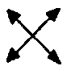
- 식서 방향
- 바이어스 방향
- 다트
- 줄임
(정답률: 94%)
15. 가봉할 때 일반적 주의사항으로 적합치 않은 것은?
- 상침 시침으로 한다.
- 온 박음질을 한다.
- 실은 목면사를 사용한다.
- 우측에서 좌측으로 바느질한다.
(정답률: 84%)
16. 다음 손바느질 중 단을 꿰맬 때 주로 사용되는 방법이 아닌 것은?
- 감치기
- 말아 감치기
- 휘갑치기
- 공그르기
(정답률: 65%)
17. 조끼 안에 앞단을 붙일 때 어느 방법이 좋은가?
- 속으로 감쳐준다.
- 재봉틀로 박는다.
- 세발뜨기로 한다.
- 시침질을 해준다.
(정답률: 69%)
18. 봉사(바느질 실)의 선택 시 잘못된 것은?
- 바느질 실은 옷감과 같은 재질의 것을 선택한다.
- 혼방직물일 때는 혼용률이 낮은 재질을 선택한다.
- 두꺼운 천의 봉제시에는 광택가공한 실을 선택한다.
- 바느질 실은 옷감과 무관하게 선택한다.
(정답률: 94%)
19. 다음의 제도는 이상체 다리의 주름선 보정법이다. 보기가 설명하는 이상체형은 어느 것인가?
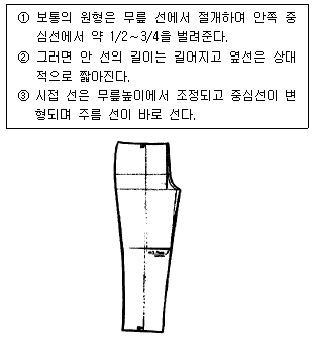
- ○ 형의 다리
- × 형의 다리
- 팔자형의 다리
- 정상체 다리
(정답률: 73%)
20. 정상체형의 제도를 가지고 이상체형에 맞게 그림과 같이 보정을 하였다. 어느 체형의 보정 방법인가?
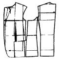
- 반신체
- 굴신체
- 비만체
- 정상체
(정답률: 63%)
2과목: 임의 구분
21. 양모 재킷 , 양복코트 등 앞판 몸판에 사용하기에 적합지 않은 심지는 어느 것인가?
- 면 심지
- 산양모 심지
- 모 심지
- 헤어 클로스
(정답률: 62%)
22. 진동선이 깊어질 경우 소매의 변화는?
- 소매가 넓어져야 한다.
- 소매산이 높아져야 한다.
- 소매통이 좁아야 한다.
- 소매산이 낮아져야 한다.
(정답률: 75%)
23. 바이어스 테이프를 사용하는 이유 중 맞는 것은?
- 모양을 아름답게 하고 누비기 위해서
- 홈주림을 위해서
- 신축성을 이용하여 곡선부분 등을 안정시키기 위해서
- 여유를 주고 늘이기 위해서
(정답률: 85%)
24. 다음은 시임의 약자들이다 잘못된 것은?
- 슈퍼임포즈 시임 - SS
- 랩 시임 - RS
- 바운드 시임 - BS
- 플랫 시임 - FS
(정답률: 50%)
25. 생산 작업지시서에서 가장 많이 쓰이는 스케치 방법은?
- 도식화
- 착장화
- 자태화
- 누드화
(정답률: 88%)
26. 다음 중 인체계측시 바지길이를 측정하는 방법으로 올바른 것은?
- 엉덩이의 가장 가는 부위를 수직 계측한다.
- 옆허리선에서 발목뼈까지의 거리를 계측한다.
- 엉덩이 밑에서 발목뼈까지의 길이를 계측한다.
- 뒤중심 허리에서 바닦까지의 거리를 계측한다.
(정답률: 94%)
27. 뚜껑주머니 안감의 시접은 안감이 밀려 나오는 것을 방지하기 위해 겉감보다 얼마를 작게 하여 주는가?
- 0.1 ~ 0.2㎝
- 0.5 ~ 0.7㎝
- 1 ~ 1.2㎝
- 1.7 ~ 1.8㎝
(정답률: 89%)
28. 다음은 소매달기이다. 다음 그림에서 각 위치의 오그림 분량으로 맞지 않는 것은? (오그림 분량은 전체 5㎝이다.)
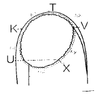
- T ~ K : 1.2㎝
- T ~ V : 1.2㎝
- K ~ U : 1.0㎝
- U ~ X : 0㎝
(정답률: 74%)
29. 다음 중 등어깨가 짧은 사람의 체형의 특징은?
- 견갑골이 나온 굴신 체형이다.
- 비만체형이다.
- 진동이 깊은 체형이다.
- 반신체형이다.
(정답률: 48%)
30. 표준체형 신사복 재킷의 소매부리 치수로 적당한 것은?
- 17∼19 cm
- 20∼22 cm
- 23∼25 cm
- 28∼31 cm
(정답률: 54%)
31. 아황산 펄프를 주원료로 하고 생산비가 싸므로 전체 레이온 생산량의 80%를 차지하는 레이온은?
- 비스코오스레이온
- 구리암모늄레이온
- 니트로셀룰로오스레이온
- 아세테이트셀룰로오스레이온
(정답률: 73%)
32. 다음 중 면직물에 속하지 않는 것은?
- 광목
- 도우스킨(doeskin)
- 포플린(poplin)
- 옥양목
(정답률: 77%)
33. 섬유 구성분자 중 아미드기(- CONH)를 가지고 있는 합성섬유는?
- 면
- 토플론
- 나일론
- 캐시미론
(정답률: 56%)
34. 항중식 번수로 굵기를 나타내는 실은?
- 면사
- 레이온사
- 나일론사
- 폴리에스텔사
(정답률: 73%)
35. 다음 실 중 데니어 식으로 표시하는 것은?
- 면사
- 마사
- 모사
- 견사
(정답률: 71%)
36. 보기 그림과 같은 단면을 가진 직물명으로 옳은 것은?
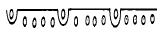
- 공단
- 서어지
- 코오듀로이
- 벨벳
(정답률: 63%)
37. 실온의 아세톤에 용해되는 섬유는?
- 아세테이트
- 나일론
- 폴리에스테르
- 면
(정답률: 78%)
38. 섬유의 단면이 삼각형인 것은?
- 견
- 면
- 모
- 마
(정답률: 78%)
39. 인조 섬유의 제조 과정에서 방사 원액에 이산화티탄(TiO2)등을 혼합함으로써 섬유의 광택을 조절할 수 있다. 다음 중 광택을 없앤 정도가 약한 것은 무엇인가?
- 덜(dull)
- 풀덜(full dull)
- 세미덜(semil dull)
- 브라이트(bright)
(정답률: 63%)
40. 구리암모늄 레이온 제조에 있어 방사시 응고액은?
- 질산
- 알코올
- 황산, 수산화나트륨, 물
- 물, 질산
(정답률: 56%)
3과목: 임의 구분
41. 남색 옷에 보색관계의 장식을 달려고 할 때 가장 알맞은 것은?
- 노랑
- 주황
- 빨강
- 보라
(정답률: 73%)
42. 다음 중 가장 차가운 느낌을 주는 옷감의 색상은?
- 청록
- 보라
- 연두
- 검정
(정답률: 83%)
43. 온도감에 영향을 가장 크게 미치는 요소는?
- 색상
- 명도
- 채도
- 휘도
(정답률: 62%)
44. 서양 복식사상 남녀 의복이 구별되고 입체재단이 시작된 중요한 시기는?
- 고대 이집트
- 중세
- 르네상스
- 근대
(정답률: 67%)
45. 흰 옷을 입은 사람이 회색벽 앞을 지나갈 때 보다 검은색 벽앞을 지나갈 때가 더 드러나 보이는 것은 다음 중 어떤 현상때문인가?
- 채도 대비
- 색상 대비
- 명도 대비
- 면적 대비
(정답률: 88%)
46. 보기의 그림에서 명도차가 큰 배색은?
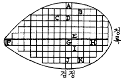
- A, B
- F, H
- E, G
- B, K
(정답률: 70%)
47. 다음중에서 점의 정의가 잘못된 것은?
- 빈공간의 부유물로 무차원속의 가상의 기호이다.
- 점 상하나 좌우에 연속성이나 지향성이 없다.
- 면적이나 체적이 없는 비체질적인 것이다.
- 점은 운동궤적의 흔적이다.
(정답률: 64%)
48. 다음 중 색이 상징하는 내용이 틀린 것은?
- 빨강- 위험, 분노
- 노랑- 명랑, 유쾌
- 녹색- 안식, 안정
- 청록- 숭고, 냉철
(정답률: 79%)
49. 귤색바지와 주황색 블라우스를 착용했을 때 조화방법은?
- 삼각 조화
- 인접색상 조화
- 분보색 조화
- 동일색상 조화
(정답률: 93%)
50. 5R 8/4 로 표시된 색채에서 8 이 나타내는 속성은?
- 색상
- 명도
- 채도
- 톤
(정답률: 65%)
51. 폴리에스테르직물에 수산화나트륨 용액을 처리하여 유연성과 드레이프성, 촉감 등을 향상 시키는 가공은?
- 감량가공
- D.P 가공
- 방염가공
- 방축가공
(정답률: 67%)
52. 섬유제품의 취급 방법에 대하여 제정한 기호 표시 중 옳은 것은?
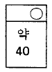
- 물의 온도 40℃ 이상에서 세탁기에 의하여 세탁할 수 있음, 손 세탁은 할 수 없음, 세제는 중성세제를 사용함
- 물의 온도 40℃를 표준으로 하여 세탁기에서 약하게 세탁, 손 세탁도 할 수 있음, 세제의 종류에 제한을 받지 않음
- 물의 온도 40℃를 표준으로 하여 드라이클리닝 및 퍼클로 세탁기로 약하게 세탁, 세제는 중성 세제를 사용함
- 물의 온도 40℃ 이하에서 손 세탁만 할 수 있음, 세제의 종류에 제한을 받지 않음
(정답률: 85%)
53. 의복이 변색되거나 퇴색되는 원인이 아닌 것은?
- 세탁에 의한 염료의 탈락
- 자외선과 공기 중의 산소
- 땀의 성분 중 산
- 의복의 형태
(정답률: 95%)
54. 다음 중 염소계 산화 표백제에 속하는 것은?
- 차아염소산 나트륨
- 아황산수소 나트륨
- 하이드로 설파이트
- 아황산
(정답률: 74%)
55. 다음 중 천연섬유가 아닌 것은?
- 캐시미어
- 실크
- 모
- 레이온
(정답률: 94%)
56. 강도가 크고 비교적 비중이 적은 섬유는?
- 탄소섬유
- 나일론
- 석면
- 아크릴
(정답률: 78%)
57. 다음 중 신사 숙녀복 안감으로 주로 사용되는 것은?
- 아세테이트
- 옥양목
- 아크릴
- 실크
(정답률: 74%)
58. 탄성이 우수하여 스타킹으로 주로 사용되는 것은?
- 아크릴
- 나일론
- 폴리에스테르
- 스판덱스
(정답률: 65%)
59. 직물 조직중에서 교착점이 가장 많은 조직으로 여러 가지 방법으로 장식을 하거나 구조(조직)에 변화를 줌으로써 가장 질이 다른 직물을 얻을 수 있는 것은?
- 평직
- 능직
- 주자직
- 다이아몬드직
(정답률: 54%)
60. 세탁시 세제의 농도는 어느 정도일 때 세척 효율이 좋은가?
- 0.0∼0.1 %
- 0.2∼0.3 %
- 0.4∼0.5 %
- 0.5∼0.6 %
(정답률: 47%)